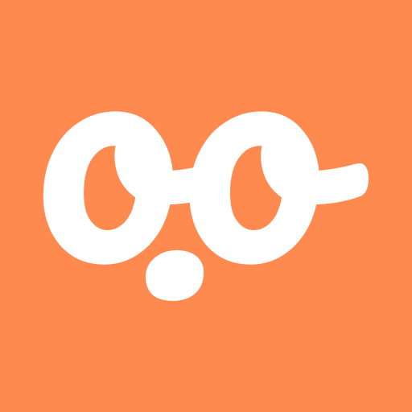
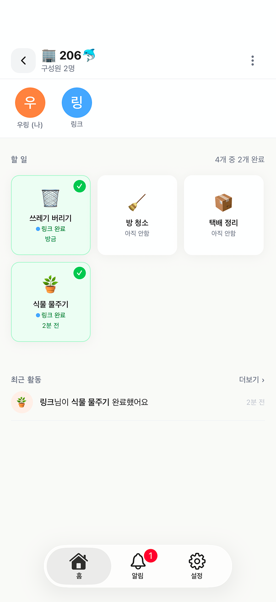

우링
ooring
같이 사는 사람들 사이에서 집안일은 생각보다 말로 꺼내기 어렵습니다. ooring은 할 일을 정하고, 끝냈다는 사실을 조용히 알려주는 앱입니다. 고마움도 길게 설명하지 않고 짧게 전할 수 있게 만들었습니다. Chores can be harder to talk about than they seem, especially with people you live with. ooring helps a shared home set small tasks and quietly say when they are done. It also gives people a simple way to say thanks without making it a big moment.
